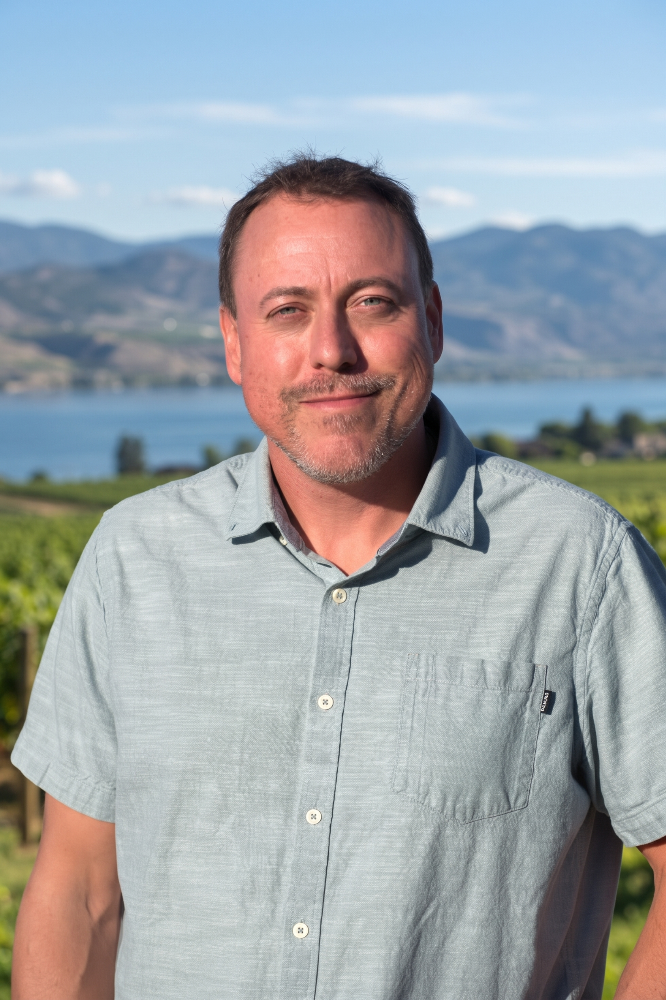
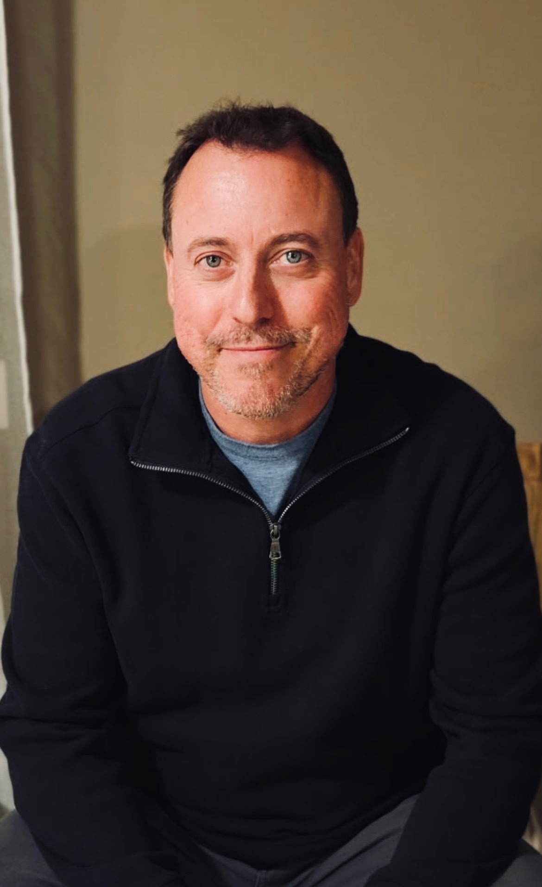

ONEBC CANDIDATE · KELOWNA–MISSION
A stronger voice.
Right here
at home.
Abraham Nordine
Rooted in the Okanagan. Focused on families, opportunity, and accountable government.
Our province. Our future.


MEET YOUR CANDIDATEROOTS, FAITH & FAMILY
A life built
in the Okanagan.
A husband, father of five, and entrepreneur who calls Kelowna–Mission home.
Abraham grew up in Kelowna with four brothers. From swimming at Gyro Beach and playing baseball at Elk’s Stadium to delivering newspapers and working in local orchards, his roots in the community run deep.
He met his wife, Eniko, in sixth grade. His Christian faith and family remain central to his life and values.
After graduating from Okanagan University College with a business diploma in 1999, Abraham built a career spanning business consulting, mortgage brokerage, homebuilding, real estate, and import and wholesale management.
Start a conversationWHERE I STAND
Clear priorities.
Real local concerns.
Abraham’s positions, summarized from his current campaign website. Select a priority to read more.
01Tax relief & economic growth
Abraham supports tax relief for working families, less government waste, and a smaller bureaucracy. He believes government should create the conditions for private businesses to invest, grow, and create opportunity.
02Parents & education
Abraham supports parents’ role in raising and educating their children. He calls for removing SOGI from schools and returning the focus to foundational learning.
03Healthcare that delivers
His own experiences with specialist waits, back surgery, and oncology care inform his commitment to healthcare reform. Abraham supports structural changes to improve access to timely medical care.
04Safer streets & treatment
Abraham advocates treatment for people experiencing addiction alongside enforcement against public consumption of controlled substances. He calls for closer coordination between police and prosecutors and faster charge assessments.
05Freedom of expression
Abraham identifies protection of free speech for every citizen in British Columbia as a core commitment.
06Equal treatment & reconciliation
Abraham emphasizes equal dignity, respect, and consistent standards for everyone. He opposes DRIPA, raises concerns about private property rights, and opposes mandatory land acknowledgements in government settings.
GOOD CONVERSATIONS START LOCALLY
Your neighbours.
Your questions.
Let’s meet.
Host an informal, one-hour meet and greet at your home or in your driveway. Bring together friends and neighbours for a conversation with Abraham.
Ask about hostingPlease allow at least 48 hours’ notice. The campaign team confirms arrangements 24 hours before the event.
CONTACT ABRAHAM
What matters
to you?
Share a local concern, ask a question, or get in touch about the campaign.